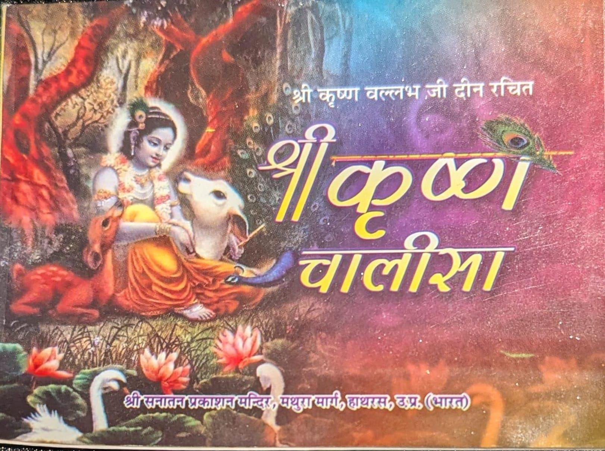

Publications
A selection of religious and literary works published by Sanatan Prakashan Mandir. Each title can be read online or downloaded as a PDF.

📜
📰
Dainik Krantinaad
The newspaper published by Sanatan Prakashan Mandir, printed at Sri Ballabh Press.
Read PDF📜